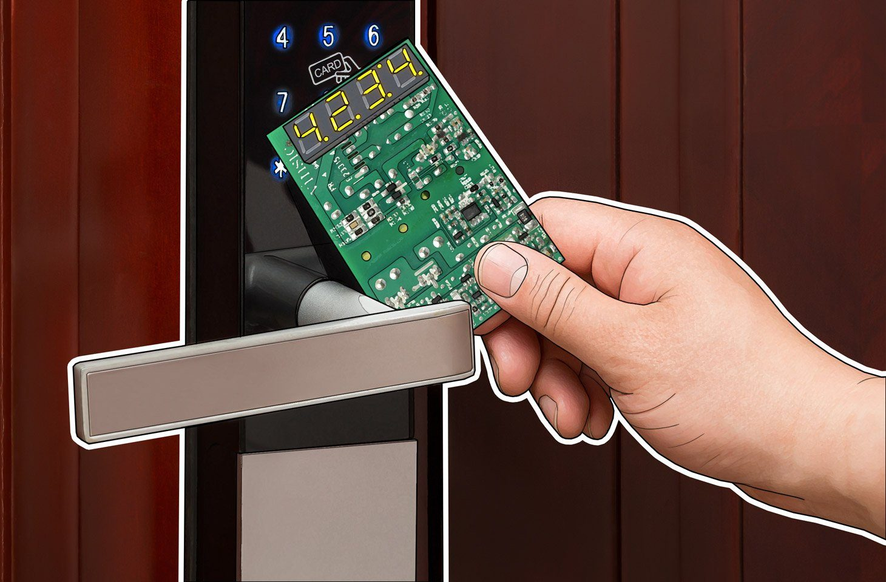

Wouldn't it be amazing to make your car think it's following another route! This is where this project and research plan came into place. It's initial purpose was for
Classified Objective but I still had some fun learning about the process and how a car picks up
a location, how the GPS triangulates the signals and what's need to spoof this signal. I also realised the potential threat factor with this as autopilot is now a huge thing with car
makes such as Tesla, BMW, Audi,Mercedes Benz and much more which rely on this information not just for travelling but speed which used in the wrong hands could be fatal
I used one of my favourite tool the HackRf One to do this and had the pleasure in dabbling in some hardware creation too, where I needed to make a PCB TXCO to Concentrate the signal.
It's worth noting that a lot of systems now hav extra measure in place to stop such attacks happening in the future such as not just relying on GPS Co-Ordinates using cell towers and
extreme measures like Tesla has done which involved in detailed authentication methods such as their own satellites. Interestingly other makes havn't put much attention into this which has
shown via personal research.

I've always be interested in how entry systems work for buildings apartments UFO's ect. This lead me to some research and a purchase for a ProxyMark3 easy which at the time seemed
to be the best tool to analyse keycards/fobs. I messed around with the tool but at the time had nothing to really test with except a quick look at my University card and start to understand
the data tables held in the chip. This is where this project comes in where a friend of my allowed me to do some research on his apartment where he uses a fob to get in. This is my favourite
type as I don't know if it'll be successful and start with 0 inforamtion.
I first did a generic research on different type of fabs/cards used to be used 'Low Frequency (LF) cards and tags: Proxmark can read and clone LF cards and tags operating at 125 kHz and 134 kHz, such as HID Prox, EM410x, and Indala.
High Frequency (HF) cards and tags: Proxmark can read and clone HF cards and tags operating at 13.56 MHz, such as MIFARE Classic, MIFARE DESFire, ISO 14443, and ISO 15693.
Ultra High Frequency (UHF) cards and tags: Proxmark can read and clone UHF cards and tags operating at 860-960 MHz, such as EPC Gen2 and ISO 18000-6C.'

I saw this being done a while back and quickly downloaded the Tesla files to my flipper and tried it out on a colleagues tesla (with permission of course) and It WORKED (2023)! This shocked me and raised
more questions than answered. Why does this signal open the charging ports, is this a potential backdoor door into the vehicle and dows this work with other electric/hybrid cars?Let the research begin!!!
I found some very interesting writeups on how to do this with a HackRF One so I got started. I went down to my nearest charging forcoutr at the time where little cars where there as the idea of getting shouted
at by a tesla driver in a charging station didn't sound fun. I also asked if I could

{kind=link}
{kind=link}